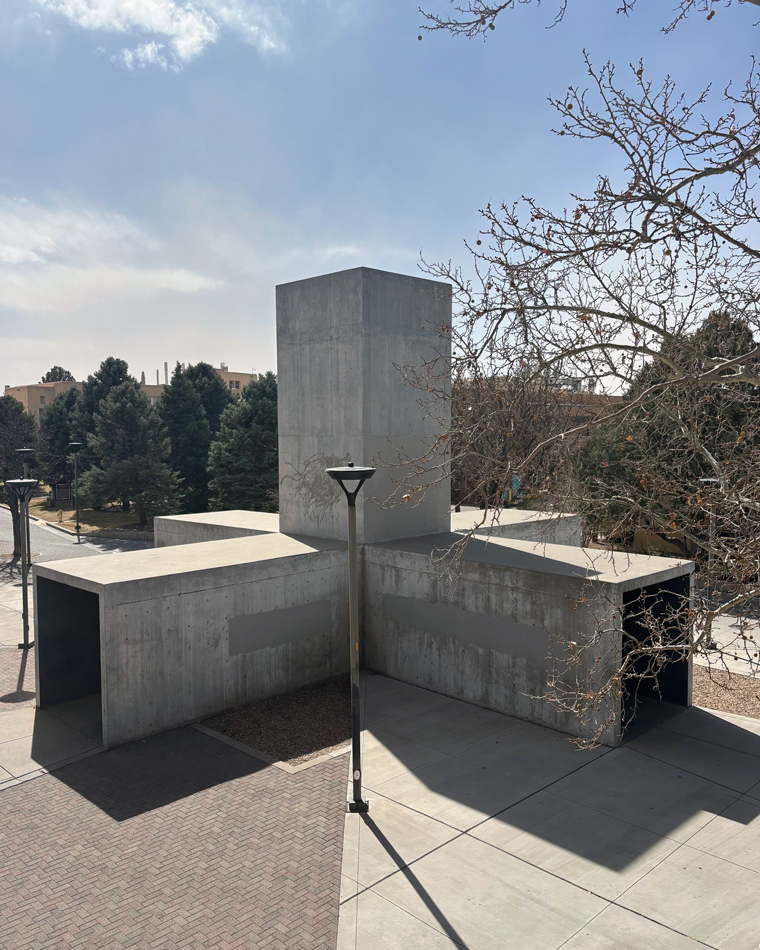
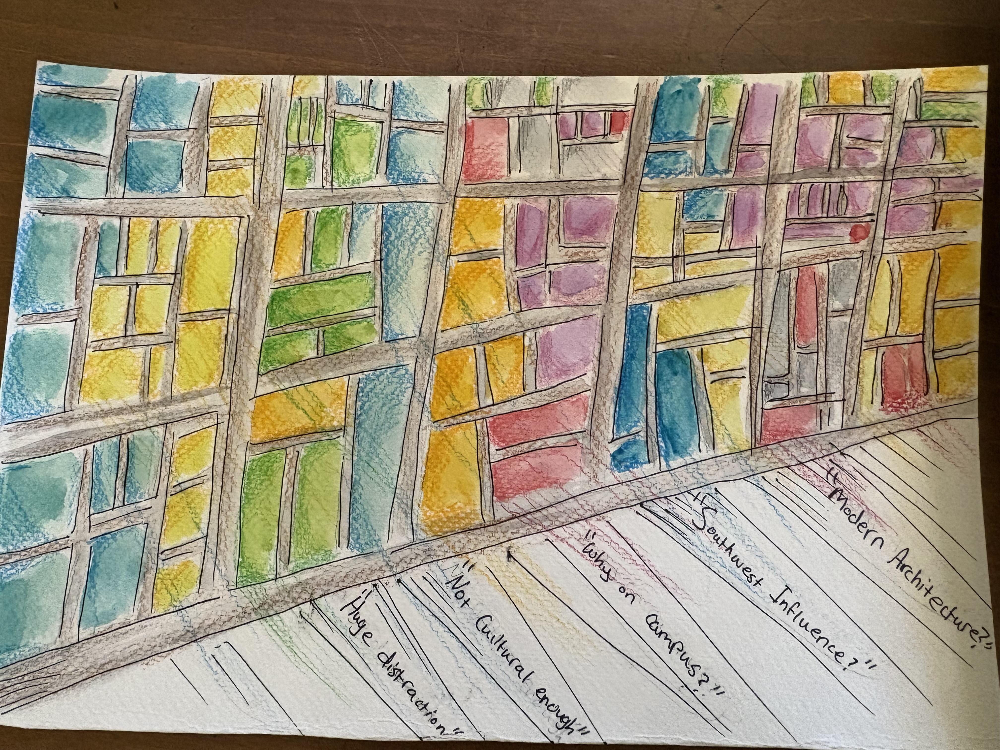
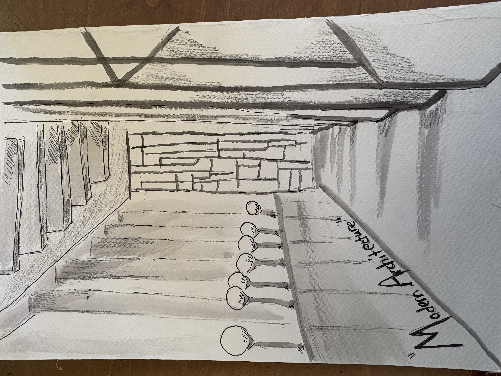

Introduction - Celeste Bivens
Here is my final Portfolio Project for Creative UNM Honors class!
I created this website using HTML and CSS to practice my programming skills.
This is where I will be reflecting on the various creative works I created throughout this semester in Places of the Present: Creative UNM, as well as including them in each tab. There are seven components of this Final Portfolio: a Turning Point essay, reflections for three of my in-class activities, Group Video Project, Archival Report, and Creative Project. I have also included my responses to the SLO form and Works Cited. Hope you enjoy!
You can start reading by either scrolling, or clicking any of the links on the top right!
Turning Point Essay
Throughout this course, I have learned many techniques and strategies needed to analyze and truly appreciate a creative work. Through comprehensive discussions, field trips, and group work, I learned the significance of these various places here at UNM. One of these notable experiences happened on the first day of the Creative UNM Honors course. I vividly remember the first group activity we had in class: we were divided into several groups and assigned to specific artworks in the honors college forum. We were tasked with filling out the FTC (form, theme, and context) model for our artwork. I could never forget our assigned piece hanging on the wall nearest to the Honors College Forum: it as a woven tapestry (many refer to it as a rug) donated by a former Honors College student. This immediately captured my attention because of its intricate geometric shapes, vivid colors, repeating patterns, and impressive symmetry. It was handmade with dyed thread from the place of origin, although I no longer remember exactly where it’s from, I remember the story of its creation reflected in the description from the honors college student. Additionally, I also found it fascinating since this rug was woven in just a few months from two women, an impressive feat. I was astonished by this fact, considering the level of artistry and detail in the rug’s design. Deep blues, rich reds, and Mediterranean-inspired geometric designs combined to create a visually striking composition. It was an artwork which causes people to pause and gaze toward it because of the intricate details. From that day forward, I began appreciating the hard work and dedication evident in any artwork. This type of art should be more of an experience rather than a spectacle to gaze at; I then learned the importance of applying an FTC model not only to art, but to any other fields in life. This model encourages observation and interpretation, skills that are valuable in both academic and personal contexts. It helped me realize the beauty of slowing down and taking time to examine details of a creative work.
Another aspect of the course which contributed to my profound interest in creative UNM was the archival report. This project allowed me to immerse myself in an environment where collecting physical data on a person's life can hold true value. Throughout high school and in university, I have been desensitized to finding sources of information online, so this experience was slightly foreign to me. I chose to focus on the papers of the late architect, George Pearl. There were nearly twenty-five boxes of material pertaining to the professional life of George Pearl, which I narrowed down to selecting three. Using these physical documents provided to me at the Center for Southwest research in Zimmerman, I began mapping out the life of George Pearl and his designs for various buildings. Pearl was known to be a prolific painter, sketcher, and photographer; the combination of all these mediums were used to record or create many of New Mexico’s historic buildings we see today. The specific place I focused on with these papers is the Main Public Library located on 501 Copper Ave NW. People commented on the layout of the new library because of Pearl’s efforts with contributing to the design. “Can a building make you feel good? Yes. We’ve all had the experience of entering a building and sensing immediately that the building is sharing with us, in a personal way, its soul and identity.” – Anonymous (pg. 18). I learned how important Pearl was not only to UNM, but to the community through expressionism and creativity. I am fortunate and grateful to have study the life of this influential architect in this assignment. Pearl’s design is still present even today in the library, making it one of the most visited and iconic places in Albuquerque. This place contributes to creativity in a more community-based setting, fitting itself in the overarching theme of creativity not just within UNM, but in Albuquerque as a whole.
Since this is also place-based learning course, the place I truly enjoyed and had the most meaningful experience at was the ARTSlab located near UNM’s science and technology research facilities. This is the place where research and projects are conducted ranging from film-making to optic sensing experiments; a large number of projects intertwining creativity and STEM are located within this building. Faculty, graduate students, and This place is deemed the “incubator” of innovative ideas. It is a facility containing various studios, labs, and creative spaces for both students and faculty to work in. In fact, the largest 3D printer and supercomputer is located in ARTSLab. The idea of connecting technology with creativity is something I strive to do in my future career. I truly felt the influence of creative UNM at this place, and was inspired to reach beyond my capabilities as an artist and engineering student. It is the space where artists and researchers learn new technologies to advance their research, and I find this line of work extremely fascinating.
I had always indulged myself in art ever since I was younger. I drew, painted, and sketched very often throughout my early childhood. It was until university started where my motivation to create new things dwindled down periodically as my assignments, exams, and grades slowly shifted to becoming the priority of my life. This class brought me back to simple times where creating art was a constant in my life; I didn’t have to consider the amount of time it would take to create art. I feel as though I can enjoy the analysis and process behind creativity just like in the past. As stated before, the assignments that brought me back to this era of passion were discussing the FTC models when embarking on class field trips, the quest of finding information for the archival report, and field trips to various places (including the ARTSLab, Tamarind Institute, and Violin-making workshop). All of these different aspects of the class encouraged the importance of thoughtful artistic analysis and critiques, while also appealing to the sense of enjoying an art piece.
This course encouraged me to think critically about art by asking meaningful questions: What is the meaning of this piece? What about it is appealing to the audience? While these questions may initially seem subjective, I found that class discussions provided valuable insight into how different perspectives shape the interpretation of an artwork. Listening to the opinions and interpretations of others deepened my understanding of active listening, collaboration, and critical thinking. This is why I enjoyed the in-class discussions on these art pieces since they allowed me to fully understand active listening and having different opinions influence the overall meaning of a particular art piece. I especially loved discussing controversial art pieces that may be found on UNM’s campus due to the intricacies of the content.
Assignment Reflections
Violin-workshop: I really enjoyed visiting the violin-making workshop here at UNM. It was certainly one of the places on campus I wouldn’t be visiting (or know of its existence) if it weren't for this class. I am extremely grateful for the opportunity to learn more about the intricate nature of violin-making, as well as the dedication to hone its craft.
Cherry Reel Festival: I enjoyed watching the different films students directed and composed. I was fairly impressed with most of the films shown in the festival. One film that stood out to me was ”Damsel in Distress” by Liana Montoya-Loranger. The film critiqued the stereotype of females always needing a superhero/male lead to save them from whatever danger they may be in.
Tamarind Institute Field Trip: I loved visiting this place! It was amazing experience the printmaking process here at UNM. It’s interesting to see how they preserved this artistry for nearly a century (maybe even longer).
Field Works
I spent most of my time studying or attending class in the Electrical and Computer Engineering building, specifically the WHY lab. Centennial engineering library is right next to it as well, so I chose to focus on it for the library field work. These are places where creativity in STEM booms. The comments I’ve received on the fieldworks were generally positive, the general consensus being that I needed more clarification on my reflection of the places more. I agree with this statement and believe there is a lot to reflect on with regards to the ECE building and Centennial Library. Overall, these are places most students spend their time; students focus on learning and understanding the material in Centennial library whereas they may apply this knowledge in the WHY lab. The two places go hand in hand, and I truly think these are places for engineers to explore their creativity.

Group Video Project
Our group decided to focus on the history of the “Center of the Universe” located near the UNM Duck Pond. This is a central point on campus where many students walk either around or through the sculpture. We researched the history of the sculpture and interviewed students who pass through the middle. The comments on this assignment mostly critiqued the filler conversation in the video to reach the desired time limit. In all fairness, we weren’t able to find many sources of information regarding the history of the sculpture itself online. However, this fact shouldn’t be an excuse for us to record a candid conversation of us talking about the sculpture for 3-4 minutes. Overall, this was a fair assessment of our group video project. We still had an fun time filming and learning the history of the sculpture, which is something I never expected considering the amount of times I have walked past this sculpture on the way to my classes.
Archival Report
I chose to focus on the George Pearl Papers found in the Center for Southwest Research. George Pearl was a prominent architect at UNM, being one of the head faculty members and generous donors of the architecture department. I actually had an enjoyable time studying these papers in the library; the atmosphere was quiet and serene as I sifted through the sketches, media, and bibliographies of George Pearl. The grading on this assignment was fairly generous, with the only criticisms being mechanical errors in the writing and data collecting. My Works Cited page was also out of order which I should have paid more attention to. Overall, I am content with my grade and grateful for learning more about the influential architect, George Pearl. *and yes, Dr. Donovan, you can use my work on this assignment for future classes!


Creative Project
I decided to focus on Travelstead hall for my creative project, emphasizing the differences in architectural design within the building. I have always been drawn towards this building because of the stained-glass wall; I find myself strangely motivated by light shimmering through the glass and refracting into mixed rays of color. On the other hand, I chose to focus on the brutalist design of the entrance. Once again, the issue with my grade lies within the mechanics of my paper. I failed to include in-text citations which is critical for an academic college-level paper. I completely understand the fault in my writing and will work to improve on this aspect in the future.
Student Learning Objectives
SLO #1: Students will be able to analyze and critically interpret place as though it were a text (community-engaged learning).
I agree with this statement. There was a lot of though-provoking discussions regarding certain artworks on campus. For example, the Three Peoples mural was an artpiece that invoked much discussion due to its controversial meaning. This discussion was more meaningful since we visited the place in the library where the mural was “covered” yet still accessible with the public.
SLO #2: By the end of this course, successful students will be able to: Engage in reflective practices (communication + community-engaged learning).
I completely agree with this statement. This course encouraged me to speak up about the different aspects surrounding art and its history: I was pushed to critique and comment on art in ways I’ve never encountered before.
SLO #3: Articulate reflections and synthesis through written and/or other media (communication).
The amount of writing in this course was substantial enough to grasp the importance of creative UNM as a whole. Through various essays, discussions, writing workshops, and note-taking, I was learning to articulate my opinions of an art piece to writing.
SLO #4: Apply cross-disciplinary knowledge and methods to develop questions (interdisciplinarity).
The amount of writing in this course was substantial enough to grasp the importance of creative UNM as a whole. Through various essays, discussions, writing workshops, and note-taking, I was learning to articulate my opinions of an art piece to writing.
SLO #5: Take creative risks and solve problems through iteration, revision, and exploration of divergent solutions (creative thinking)
Yes, I completely agree with this statement since I’ve personally faced these decisions throughout the entirety of this course. I’ve learned the craft of revising, exploring, and stepping out of my comfort zone to delve into the meaning of a creative work. These are strategies that will help in the future with my professional career, and I am grateful for being exposed to these methods early on in my academic career.
Works Cited
“New Mexico Archives Online.” Nmao-Custom-Branding, George Pearl Papers. Box 6, Folders 5-6. nmarchives.unm.edu/search?utf8=%E2%9C%93&op%5B%5D=&q%5B%5D=george%2Bpearl%2Bpapers&limit=&field%5B%5D=&from_year%5B%5D=&to_year%5B%5D=&action=search&sort= &filter _q%5B%5D=UNM&filter_from_year=&filter_to_year= &commit=Search. Accessed 31 Mar. 2026.
“New Mexico Archives Online.” Nmao-Custom-Branding, George Pearl Papers. Box 6, Folders 5-6. nmarchives.unm.edu/search?utf8=%E2%9C%93&op%5B%5D=&q%5B%5D=george%2Bpearl%2Bpapers&limit=&field%5B%5D=&from_year%5B%5D=&to_year%5B%5D=&action=search&sort= &filter _q%5B%5D=UNM&filter_from_year=&filter_to_year= &commit=Search. Accessed 31 Mar. 2026.
“UNM Artslab - Artslab - the University of New Mexico.” ARTSLab, 11 Dec. 2025, artslab.unm.edu/page/2/?el_dbe_page.